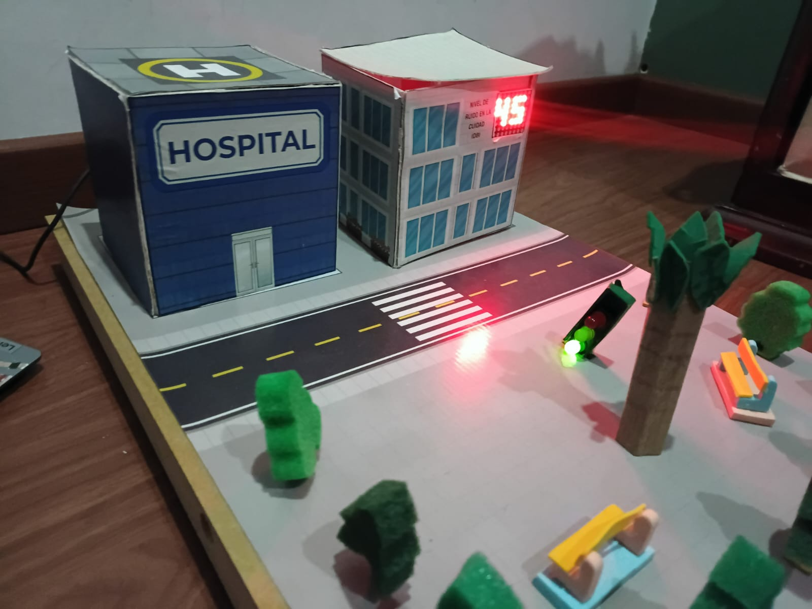

PROYECTO DE GESTIÓN DEL CONOCIMIENTO · PGC
Comprender el ruido.
Un módulo de monitoreo acústico que transforma mediciones de sonido en información para reconocer patrones por zona, horario y nivel de ruido.
MONITOREO ACÚSTICO● SIMULACIÓN
⌁
NIVEL ESTIMADO dB variable
ESP32 · SENSOR DE SONIDOVERDE / AMARILLO / ROJO
Análisis temporalHora y jornada
Contexto por zonaResidencial · Comercial · Hospitalaria
UNIVERSIDAD DE CUNDINAMARCA · EXTENSIÓN CHÍAINGENIERÍA DE SISTEMAS
01 / IDENTIFICACIÓN
El ruido también
cuenta una historia.
La contaminación acústica es un fenómeno urbano que puede variar según el lugar y el momento del día. Este proyecto desarrolla un módulo demostrativo de Ciudad Inteligente para estimar niveles de ruido, clasificarlos mediante un semáforo y organizar las mediciones para su análisis.
El trabajo integra una maqueta física, un sistema basado en ESP32, almacenamiento relacional, un Data Warehouse y herramientas de inteligencia de negocios.
PROBLEMA
¿Cómo reconocer los patrones del ruido urbano?
Sin un registro organizado de las mediciones, resulta difícil comparar zonas y horarios, identificar concentraciones de niveles elevados y comunicar evidencia que apoye decisiones de monitoreo.
JUSTIFICACIÓN
Medir para comprender y actuar.
El módulo permite demostrar cómo los dispositivos de captura, el almacenamiento y el análisis de datos pueden apoyar la observación de un fenómeno urbano. La solución tiene fines académicos y de simulación.
02 / PROPÓSITO
Objetivos del proyecto
Una ruta desde la captura de información hasta la generación de conocimiento.
OBJETIVO GENERAL
Desarrollar un módulo demostrativo de monitoreo de contaminación acústica para Ciudad Inteligente que permita estimar y clasificar niveles de ruido en diferentes zonas, almacenar las mediciones y analizarlas mediante un modelo multidimensional y herramientas de visualización.
01
Implementar un sistema físico con ESP32 y sensor de sonido para obtener lecturas y representar su clasificación mediante un semáforo.
02
Diseñar una base de datos relacional que organice zonas, sensores, estados, límites y mediciones.
03
Generar un conjunto simulado de un millón de mediciones para probar el almacenamiento y el análisis.
04
Construir un Data Warehouse y un proceso ETL que preparen los datos para consultas analíticas.
05
Visualizar, interpretar y comunicar patrones que permitan formular decisiones para el escenario simulado.
03 / DESARROLLO DE LA SOLUCIÓN
Del entorno físico al conocimiento
El módulo combina dispositivos, lógica de clasificación y una arquitectura de datos para estudiar el comportamiento del ruido.
01
Captura
El sensor de sonido entrega una señal que es procesada por el ESP32 para estimar el nivel acústico.
ESP32 · SENSOR DE SONIDO→
02
Clasificación
La lectura se compara con umbrales definidos para la zona y la jornada, representándose con el semáforo.
VERDE · AMARILLO · ROJO→
03
Almacenamiento
Las mediciones se organizan en una base relacional y se preparan para el análisis multidimensional.
SQL SERVER · SSIS→
04
Análisis
Power BI permite explorar indicadores, distribuciones, comparaciones y patrones combinados.
DATA WAREHOUSE · POWER BIEscenarios representados
TRES TIPOS DE ZONA⌂
ZONA 01
Residencial
Entorno destinado principalmente a vivienda.
▦
ZONA 02
Comercial
Entorno asociado a actividades comerciales.
✚
ZONA 03
Hospitalaria
Entorno que requiere especial atención al ruido.
PROTOTIPO FÍSICO
Así se materializa.
Maqueta demostrativa del módulo de monitoreo de contaminación acústica, que integra el sensor de sonido, el ESP32, el semáforo y los elementos del entorno urbano.

Nota técnica: las lecturas del módulo físico son estimaciones del montaje académico. La simulación de un millón de registros utilizada en la base de datos es un conjunto de datos generado para pruebas y análisis; no representa mediciones reales de la ciudad ni certifica cumplimiento normativo.
04 / METODOLOGÍA
Proceso de trabajo · CRISP-DM
Las fases organizan el ciclo de análisis de datos y conectan el desarrollo técnico con la evaluación de resultados.
Definir el problema de contaminación acústica, el propósito del módulo y las preguntas que orientan el análisis.
Reconocer las zonas, sensores, fechas, horas, niveles estimados y estados registrados o simulados.
Organizar la información en SQL Server y transformarla mediante el proceso ETL en SSIS.
Construir indicadores y visualizaciones en Power BI para estudiar distribuciones, comparaciones y relaciones.
Validar los resultados, revisar calidad y limitaciones, e interpretar los conocimientos obtenidos.
Publicar el sitio web, integrar el dashboard y comunicar hallazgos y decisiones.
05 / GESTIÓN DE LOS DATOS
Una arquitectura preparada para analizar
El modelo operacional conserva las mediciones; el Data Warehouse las organiza para consultas desde distintas perspectivas.
1.000.000mediciones simuladas
01 ene – 10 novperiodo de 2026
48,534762 dBpromedio reportado en el origen
0rechazos reportados en pruebas ETL
MODELO OPERACIONALSQL SERVER
Modelo relacional
Base de datos CiudadInteligente_Acustica. Organiza las entidades y sus relaciones para almacenar las mediciones.
MedicionIdMedicion · FechaHora · NivelRuidoDbIdSensor · IdEstado · límites
ZonaNombre · Tipo
SensorUbicación · Zona
EstadoSemaforoColor · Descripción
LimiteRuidoZona · Jornada · umbrales
dbo.vw_ETL_Mediciones
MODELO ANALÍTICOESQUEMA ESTRELLA
Modelo multidimensional
Data Warehouse CiudadInteligente_Acustica_DW. Una fila de hechos representa una medición individual.
DimFecha
DimZona
FactMedicionNivelRuidoDbLimiteModeradoDbLimiteAltoDbCantidadMediciones
DimSensor
DimHora
DimEstado
PROCESO ETL · SSIS
Extraer → Transformar → Cargar
El paquete ETL_CiudadInteligente_Acustica consulta la vista de origen, prepara los atributos temporales, obtiene claves sustitutas mediante Lookup y carga la tabla de hechos.
01Origen relacionalvw_ETL_Mediciones
→
02TransformacionesConversión · Lookup · validación
→
03Destino DWDimensiones + FactMedicion
Reglas de simulación reportadas
Jornada diurna: 06:00 a antes de 21:00. Jornada nocturna: demás horas. Distribución objetivo aproximada: 70 % normal, 22 % moderado y 8 % alto.
Validaciones reportadas
Conteo de origen y destino, registros rechazados, correspondencia dimensional y repetición de la carga. Se reportaron tres ejecuciones exitosas de un millón de filas.
06 / EXPLORACIÓN ANALÍTICA
Los datos, en perspectiva.
Explora los indicadores y las comparaciones del módulo de contaminación acústica mediante el informe interactivo desarrollado en Microsoft Power BI.
DASHBOARD DE POWER BI
Cargando informe interactivo...
El informe permite consultar indicadores, comparar las zonas y explorar los datos mediante filtros de fecha, zona, jornada y sensor.
↗ Utiliza los filtros del informe para cambiar la zona, la jornada y el sensor. Los indicadores se actualizan según la selección realizada.
5Indicadores generalesMediciones · sensores · promedio · registros altos · porcentaje
3Análisis univariadosEstado · intervalos de ruido · hora
3Análisis bivariadosZona · jornada · sensor
1Análisis multivariadoZona + jornada + mes
PREGUNTAS QUE ORIENTAN EL ANÁLISIS
¿Qué zona presenta el mayor promedio de ruido? ¿Cómo cambia el nivel acústico según la hora? ¿Qué proporción de mediciones supera el límite alto? ¿Cómo se distribuyen los estados del semáforo?
07 / CONOCIMIENTOS EVIDENCIADOS
De los gráficos a los hallazgos
Interpretación de los patrones observados en las dos páginas del informe de Power BI. Los resultados corresponden al conjunto simulado y pueden cambiar al modificar los filtros.
Predominio de niveles inferiores a 50 dB
La distribución por intervalos de 5 dB concentra la mayor frecuencia en los rangos de 30 a 50 dB. A medida que aumenta el nivel de ruido, disminuye la cantidad de registros, especialmente en los intervalos superiores a 80 dB.
Hallazgo observado en Power BI
Mayor frecuencia del estado verde
El estado verde reúne la mayor cantidad de mediciones, seguido por el amarillo y, finalmente, el rojo. Esto refleja el predominio de registros clasificados en el rango normal dentro de los parámetros definidos para la simulación.
Hallazgo observado en Power BI
El promedio aumenta durante el día
El promedio por hora se mantiene alrededor de 44,5 dB durante la madrugada, aumenta desde las 06:00 hasta valores cercanos a 51 dB y desciende nuevamente alrededor de las 21:00. La frecuencia de registros por hora es relativamente uniforme.
Hallazgo observado en Power BI
La zona comercial presenta el promedio más alto
La comparación por sensores muestra un promedio aproximado de 54 dB en la zona comercial, 47 dB en la residencial y 44 dB en la hospitalaria. Los porcentajes sobre el límite alto por zona se observan cercanos al 8 %, aunque deben revisarse con los filtros activos.
Hallazgo observado en Power BI
La proporción de mediciones altas cambia según el periodo seleccionado
En la vista filtrada para zona comercial, jornada diurna y Sensor Comercial 01, entre el 2 de febrero y el 10 de noviembre de 2026, se registraron 187.442 mediciones, con un promedio de 56,41 dB. De ellas, 15.011 superaron el límite alto, equivalentes al 8,01 %. El porcentaje mensual mostrado osciló entre 7,76 % y 8,61 %, con el valor más alto en noviembre, mes con cobertura parcial.
Resultado de una selección específica de filtros
Lectura de cada conocimientoPregunta→Variables→Visualización→Resultado→Interpretación→Limitación
Alcance de la interpretación: los valores aproximados de las comparaciones generales se leen de las gráficas. Los indicadores de la primera página corresponden únicamente a los filtros visibles en esa captura. Al cambiar zona, jornada, sensor o fecha, los resultados pueden variar.
08 / VALIDACIÓN Y TOMA DE DECISIONES
Conocimiento que orienta acciones
Las propuestas se derivan de los patrones observados en el conjunto simulado y no constituyen intervenciones sobre una ciudad real.
DECISIÓN 01
Priorizar la observación de la zona comercial
La zona comercial presenta el mayor promedio de ruido entre los sensores comparados. En el ejemplo filtrado, el 8,01 % de las mediciones superó el límite alto. Se propone revisar con mayor detalle sus periodos y registros de alerta.
Indicadores de seguimientoPromedio de dB y porcentaje sobre el límite alto por zona.
DECISIÓN 02
Observar las franjas horarias diurnas
El promedio por hora aumenta desde las 06:00 y se mantiene alrededor de 51 dB durante buena parte del día. Se propone comparar esas horas entre zonas y jornadas para identificar cuándo se presentan mayores niveles.
Indicadores de seguimientoPromedio de dB y frecuencia de estados amarillo y rojo por hora.
10 / CONCLUSIONES Y REFERENCIAS
Una ciudad más comprensible
comienza con datos.
El desarrollo integra un módulo físico de monitoreo acústico con una arquitectura de datos que permite almacenar, preparar y analizar mediciones. La conexión entre el prototipo, la base relacional, el Data Warehouse, el proceso ETL y Power BI demuestra el recorrido de los datos desde su captura o generación hasta su interpretación.
En el análisis exploratorio, la mayor frecuencia se concentra en intervalos inferiores a 50 dB y predomina el estado verde del semáforo. También se observan diferencias entre zonas: el sensor comercial presenta el promedio más alto, seguido del residencial y el hospitalario. Por hora, el promedio aumenta durante el día y disminuye en la noche, mientras que la frecuencia de mediciones se mantiene relativamente uniforme.
En la consulta filtrada de la zona comercial, jornada diurna y Sensor Comercial 01, se obtuvo un promedio de 56,41 dB y un 8,01 % de mediciones sobre el límite alto. Este resultado es específico de los filtros seleccionados y no debe interpretarse como el promedio general de todo el proyecto.
Los resultados permiten demostrar la utilidad del análisis multidimensional para reconocer patrones y orientar el monitoreo. Sin embargo, corresponden a datos simulados y a estimaciones de un montaje académico; por ello, no representan mediciones oficiales ni permiten establecer cumplimiento normativo. Una implementación real requeriría sensores adecuados, calibración y validación bajo condiciones controladas.
Referencias y documentación técnica
Agregar las fuentes bibliográficas efectivamente consultadas sobre contaminación acústica, medición de sonido, metodología CRISP-DM, SQL Server, SSIS y Power BI.
Agregar manuales, fichas técnicas y documentación de los componentes utilizados en la maqueta, especialmente el ESP32 y el sensor de sonido.